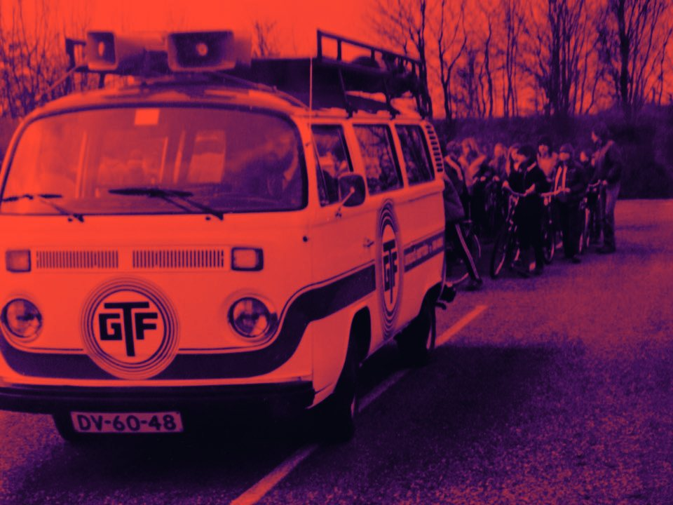

GTF Franzen / About us ±1960
About us
From Bocholtz since the sixties. Still the same family, still the same approach.
What started with home-built speakers in Bocholtz is, after more than sixty years, a technical company for events in three countries.
GTF Franzen started around 1960 by hiring out sound equipment. Public address soon followed: the horns reading FRANZEN BOCHOLTZ became a familiar sight at shooting festivals, cycling races and parades across Limburg.
Lighting, video and power came next. The equipment got bigger, and so did the events. What stayed is that we are a family business, where you speak directly with the people doing the work.


Personal
You have one point of contact, from the first question to the last cable. Someone who knows your event.
Our own equipment
Almost everything we use is our own and maintained by us. That makes us quick and reliable.
Experience
More than sixty years of events. There is little we have not come across.
Where we work
Bocholtz sits right on the border. Aachen is ten minutes away, Maastricht and Liège are close. We work throughout the Netherlands, Belgium and Germany.
Netherlands · Belgium · Germany

Your
event?
Tell us what you have in mind. You will hear back from the people who will actually build it.
info@franzenbocholtz.nl